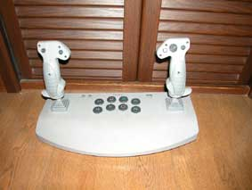
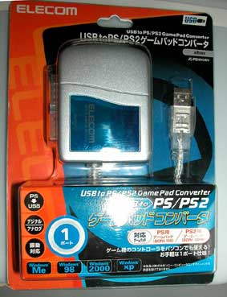
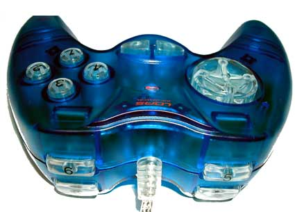

LEGOは、2002年12月MindStorms SDK 2.5を無償でリリースしました。
これで、やりたいことは、全部できるような気がしましたが、実際アプリケーションを造ろうとすると、色々な障害にあたりました。
ToweApi.h, TowerApi.dllはあるのに、towreapi.libがないなどです。
*.libがない場合、LoadLibrary()でLinkし、各関数の入り口に関数へのポインターをセットすればよいのですが、これは結構手間がかかるし、間違いがおきやすいので、自動的にこれを行う仕組みを整え、LTremo76で具体例をしめしました。
他のページにも書きましたが、SDK2.5にUSB LEGO Towerのデバイスドライバーが入っているおかげで、RIS 2.0を持っていない人でも、別途USB LEGOTowerを用意するだけでNQCなどで使うことができます。
USB LEGO Towerは、恐らくRCX, Scout, MicroSout以外にも、使えることは、薄々わかっていました。
今回のSDK 2.5により、具体的な操作法が公開され、そのすべてが使えるようになりました。
ただ、LTremo76として公開したものは、あくまで「使用例」で、プログラム的にわかりやすくても、アプリケーションとしては使いやすいものではありませんでした。
今回は、プログラムは複雑になりますが、もっと使いやすいUSB LEGO Towerの使用例を紹介しようと思います。
基本的にこのソフトは、Windows PCに繋いだJoySticks,やGamePADで、Spybotics, Bionicle RC Fighterを操作するリモコンです。
ただし、一般のリモコンと違い、JoySticks, GamePAD以外にも、Keyboardや、Mouseも使え、複数台のメカを同時に制御することができます。
さらに、その操作を時系列として記録し、ファイルにSaveしたり、ファイルからLoadし、ロボットに同じ動きをさせることができます。
いわゆるティーチングロボットを作れるのです。
今回バージョンアップ(v2.0)で次の変更をしました。
しかし実際遊んでみると、別のタイプのコントローラーも試したくなってきました。
私はTV/PC Game をしないのですが、PS2Linuxで遊びたかったので、このようなものを持っています。
また、私のものではないのですが、家の中には、

のようなものもあります。
そこでつい、ELECOM USBtoPS/PS2ゲームパッドコンバーターを買ってきて試してみました。

その結果、JoyBricxは、設計どおりアナログモード／デジタルモード双方に対応していることがわかったのですが、デバイスには、感度の違いが随分あり、これを調整できたほうが良いこともわかりました。
そこで、v2.0をリリースした直後なのですが、この感度調整機能を付加し、v2.1をリリースすることにしました。
ここに、ZIP圧縮した実行ファイル、ソースコードを含むすべてを置きます。レジストリなどシステムに手を加えませんので、安心してDownloadし、解凍後、実行して下さい。
気に入らなければ、解凍したホルダーを消去すれば、UnInstallできます。
Tool類は、お既にLTremo76で公開してますので、その分は省いています。具体的には、TowerApi_m.hと、TowerInit.incをコピーするだけです。
簡単ですので、いきなり使ったほうが、これを読んでいるより早いかもしれません(^^;
まず、Spybotics, RC Fighterを合計3台以内、それぞれ異なるチャンネルに設定します。将来的のは、このリモコンでチャンネル設定もできるようにしようかと思うのですが、今のところ、専用リモコンでセットしてください。
Spyboticsの場合、まず、Spybotの電源をいれ、専用リモコンの切り替えスイッチを中央にして、1〜3のボタンを押した後、鍵のマークを押して下さい。
RC Fighterは、切り替えスイッチを切り替えるだけですから、操作はもっと簡単です。
さて、セットが終わったら、JoyStick, GamePADの出番です。
私は、このプログラムを書きたくて、LOAS JOP-U234-CBL (USB Game Pad)を買ってきました。

X, Y 軸とボタンが8個以上あると、便利ですが、足りない場合も、キーボードやマウスでも操作できますから、このプログラムは使えます。
さらに言うなら、キーボードや、マウスでも操作できるので、そのほうが使い慣れているなら、特別、JoyStickや、ゲームコントローラーを買う必要はありません。
普通十字キーに割り当てられているX, Y軸で進行方向を決め、ボタン1〜4で、動作するマシンを選択します。
| キーの種類 | 動作 | 相当するKeyboardのボタン | 相当するパネルボタン |
| KeyのX軸 | 進行方向の左右を決める | [←] [→] | リング状の方向を左クリック |
| KeyのY軸 | 進行方向の前後を決める | [↑] [↓] | リング状の方向を左クリック |
| Button 1 | CH 1を選択 | F1 | CH 1 |
| Button 2 | CH 2を選択 | F2 | CH 2 |
| Button 3 | CH 3を選択 | F3 | CH 3 |
| Button 4 | CH 全部を選択 | F4 | |
| Button 5 | 記録開始 | F5 | Start Button |
| Button 6 | 記録終了 | F6 | Stop Button |
| Button 7 | Spybot Mode | F7 | Spybot/Bionicle Button |
| Button 8 | RCX Mode | F8 | RCX/SCOUT Button |
SpybotとRCX/SCOUTは、同時に動かすことはできませんが、モード切替で瞬時に切り替えできます。
Save Modeは、このプログラムの独自フォーマットの場合、サフィックスに、*.jbxを選択してください。この形式の場合、複数台を操作したり、モード切替を行ったことも記録されるので、完全にReplayさせることができます。
一方、NQCで出力したい場合、あらかじめ、モードを選択した後、Saveボタンを押してください。
出力されるのは、選択したモードがRCX/SCOUTの場合は、RCX/SCOUTに対して行った操作のみになります。
Spybot/Bionicleモードの場合、チャンネル1のマシンに行った操作だけが、出力されます。
JoyStick sensivityのスライダーは、使用するJoyStick等のニュートラル範囲を設定します。操作しながら快適に操縦できるよう感度調整してください。
「記録開始」をしてから「記録停止」をするまでのアクション、チャンネルの切り替えは、すべて時間経過と共に記録されます。
マウスで、Start/Stopを押すか、ジョイパッドで5/6を押すことで、開始と停止がそれぞれできます。
Saveする前に、新規に記録をとろうとしたり、FileをLoadしようとしたり、プログラムを終了しようとすると、警告が出ます。
記録したもの、ファイルからロードしたものは、Replayボタンを押すと再現されます。
チャンネルボタンを同時に2個以上押しても大丈夫です。でも、1個の場合よりマシンの応答は遅くなります。
3個同時に押せば、All channelと解釈するので、一個のチャンネルと同じように早くなります。でも、その場合は、ボタン4を押すべきでしょう。
MindStorms SDK 2.5に関連する部分は、その使用条件に従ってください。
私が独自に書いた部分については、非商用なら、自由に使ってください。商用に使う場合は、個別にご相談ください。
| 2003/02/02 | v1.0 | ファーストバージョンをリリース |
| 2003/02/08 | v2.0 | RCXの操作、NQCのエクスポート機能を追加 |
| 2003/02/09 | v2.1 | Joystick sensivity調整機能を追加 |
Copyright (C) 2003 mac@research.co.jp